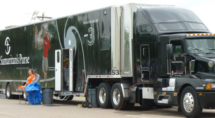
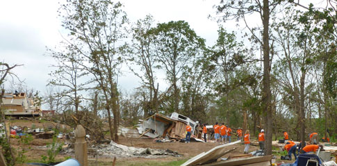
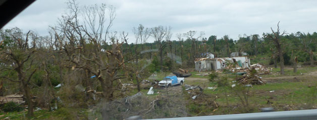
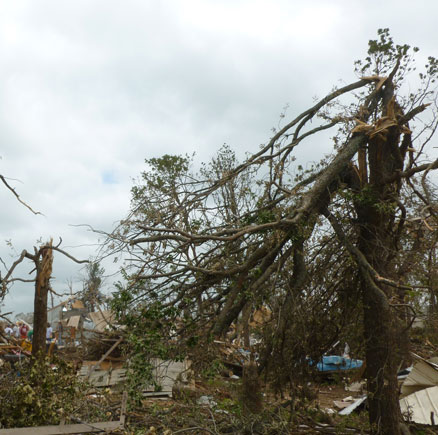
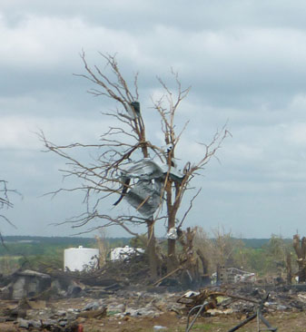
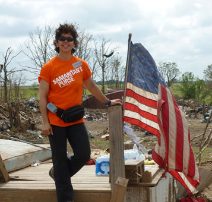
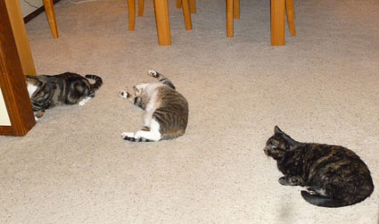

Monday, May 27, 2013
| Although my church was doing another work day
in Moore, I decided to go to Shawnee on Memorial Day since I'd heard they
were having trouble getting enough volunteers there. Turns out,
volunteers were turned away from Moore in droves on Sunday because of the
Presidential visit, so they'd had a lot of help the day before. But
the cleanup work in either town won't be done for months and months,
there's plenty to go around!
You may have heard of Samaritan's
Purse as the Operation Christmas Child folks, but they are also big
into disaster relief. I was honored to join their team for the
day. |
|
 |
 |
| The Samaritan's Purse Disaster Response 'office on wheels'. They had big efforts going in both Moore and Shawnee.
|
There were about 4 Samaritan's Purse crews working in this neighborhood,
along with at least one other unrelated church crew. These homes were
completely destroyed. |
|
 You can easily follow the path of the storm by the streak of dead trees. This can be seen from I-40. |
|
|
 |
|
| This picture is to show how the storm twists the tops right off of the trees. | |
 |
 |
| It metal always gets stuck in the trees after a tornado. | Tattered, but still flying proud. This used to be someone's front porch. |
 |
|
| After a day of cleaning up tornado debris, I came home to discover that my house was covered in cat debris! |
|